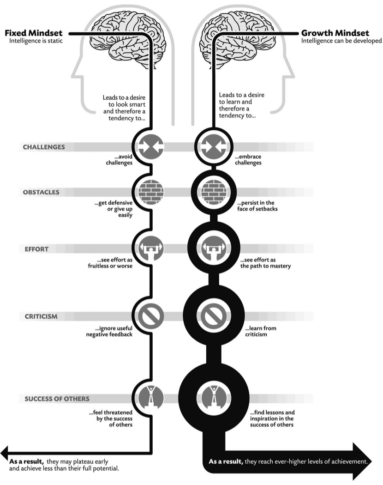

Mindset

Metadata
- Author: Carol S. Dweck
- Full Title: Mindset - the new psychology of Success
- Category: books
Highlights
Three lines
A growth mindset is based on the belief that your basic qualities are things you can cultivate through your efforts, your strategies, and help from others. Although people may differ in every which way—in their initial talents and aptitudes, interests, or temperaments—everyone can change and grow through application and experience. So start growing a growth mindset and create an environment for children, student, athletes where they can do that do.
Summary
The author started researching how people coped with failure. Doing so she used a fixed mindset as her reaction makes clear :
What’s wrong with them? I wondered. I always thought you coped with failure or you didn’t cope with failure. I never thought anyone loved failure. Were these alien children or were they on to something?
What did they know? They knew that human qualities, such as intellectual skills, could be cultivated. And that’s what they were doing—getting smarter. Not only weren’t they discouraged by failure, they didn’t even think they were.
Some of the children loved a challenge even if it meant they were failing or couldn't solve the puzzle. They had a growth mindset.
This growth mindset is based on the belief that your basic qualities are things you can cultivate through your efforts, your strategies, and help from others. Although people may differ in every which way—in their initial talents and aptitudes, interests, or temperaments—everyone can change and grow through application and experience.
They - people with growthmindset - believe that a person’s true potential is unknown (and unknowable); that it’s impossible to foresee what can be accomplished with years of passion, toil, and training.
The passion for stretching yourself and sticking to it, even (or especially) when it’s not going well, is the hallmark of the growth mindset. This is the mindset that allows people to thrive during some of the most challenging times in their lives.
Even in the growth mindset, failure can be a painful experience. But it doesn’t define you. It’s a problem to be faced, dealt with, and learned from.
Even if you feel depressed a growth mindset helps. The more depressed people with the growth mindset felt (short of severe depression), the more they took action to confront their problems, the more they made sure to keep up with their schoolwork, and the more they kept up with their lives. The worse they felt, the more determined they became!
Fixed mindset
What is a fixed mindset and what are the concequences of it ?
- In one world—the world of fixed traits—success is about proving you’re smart or talented. (Location 297)
- If you only go through life doing stuff that’s easy, shame on you.” (Location 396)
- When do people with the fixed mindset thrive? When things are safely within their grasp. (Location 412)
- people with the fixed mindset expect ability to show up on its own, (Location 447)
- After all, if you have it you have it, and if you don’t you don’t. (Location 448)
- “Becoming is better than being.” The fixed mindset does not allow people the luxury of becoming. They have to already be. (Location 464)
- The fixed mindset says yes. You can simply measure the fixed ability right now and project it into the future. (Location 490)
- If failure means you lack competence or potential—that you are a failure—where do you go from there? (Location 631)
- instead of trying to learn from and repair their failures, people with the fixed mindset may simply try to repair their self-esteem. (Location 636)

If you recognize yourself in one of the fixed mindset statements don't dispair. Some steps to grow towards a growth mindset :
- For simplicity the author speaks of as though some people have a growth mindset and some people have a fixed mindset, in truth we’re all a mixture of the two. There’s no point denying it. Sometimes we’re in one mindset and sometimes we’re in the other. Our task then becomes to understand what triggers our fixed mindset. (Location 3722)
Even though we have to accept that some fixed mindset dwells within, we do not have to accept how often it shows up and how much havoc it can wreak when it does. - become aware of your fixed-mindset triggers. When does your fixed-mindset “persona” come home to roost? What’s a recent time you were triggered into a fixed mindset? What happened to summon your fixed-mindset persona? What did it whisper in your ear, and how did it make you feel?
As you come to understand your triggers and get to know your persona, don’t judge it. Just observe it. - Now give your fixed-mindset persona a name. You heard me correctly. Take a moment to think carefully about your own fixed-mindset persona. Will you name it after someone in your life? A character from a book or a movie? Will you give it your middle name—it’s part of you but not the main part of you? Or perhaps you might give it a name you don’t like, to remind you that that’s not the person you want to be.
- You’re in touch with your triggers and you’re excruciatingly aware of your fixed-mindset persona and what it does to you. It has a name. What happens now? Educate it. Take it on the journey with you.
The more you become aware of your fixed-mindset triggers, the more you can be on the lookout for the arrival of your persona. If you’re on the verge of stepping out of your comfort zone, be ready to greet it when it shows up and warns you to stop. Thank it for its input, but then tell it why you want to take this step and ask it to come along with you: “Look, I know this may not work out, but I’d really like to take a stab at it. Can I count on you to bear with me?”
Remember that your fixed-mindset persona was born to protect you and keep you safe. But it has developed some very limiting ways of doing that.
If changing to the growth mindset isn't for you right now some last words from the author :
Did changing toward a growth mindset solve all my problems? No. But I know that I have a different life because of it—a richer one. And that I’m a more alive, courageous, and open person because of it. It’s for you to decide whether change is right for you now. Maybe it is, maybe it isn’t. But either way, keep the growth mindset in your thoughts. Then, when you bump up against obstacles, you can turn to it. It will always be there for you, showing you a path into the future.
How can growth mindset be misunderstood ?
- Misunderstanding #1. Many people take what they like about themselves and call it a “growth mindset.” If they’re open-minded or flexible, they say they have a growth mindset. (Location 3677)
There’s a difference between being flexible or open-minded and being dedicated to growing talent. - Misunderstanding #2. Many people believe that a growth mindset is only about effort, especially praising effort. (Location 3681)
Praising the process children engage in can foster a growth mindset because children learn that this process brings progress and learning and that this learning doesn't magically popup. The first important thing to remember here is that the process includes more than just effort.
This is the process we want them to appreciate: hard work, trying new strategies, and seeking input from others.
Another pitfall is praising effort (or any part of the process) that’s not there. We should never think that praising a process that is not there will bring good results. A problem that’s of even greater concern to me is the fact that some teachers and coaches are using effort praise as a consolation prize when kids are not learning. If a student has tried hard and made little or no progress, we can of course appreciate their effort, but we should never be content with effort that is not yielding further benefits. We need to figure out why that effort is not effective and guide kids toward other strategies and resources that can help them resume learning. - Misunderstanding #3. A growth mindset equals telling kids they can do anything. (Location 3705)
Few people believe in children’s potential as much as I do, or yearn to see all children fulfill their enormous promise. But it doesn’t happen by simply telling them, “You can do anything.” It happens by helping them gain the skills and find the resources to make progress toward their goals. Otherwise, it’s an empty reassurance.
Parent, coach, teacher read this !
Especially if you're a parent, coach, teacher you have to reflect on yourself to see if you're stimulating a growthmindset in your children, athletes, students.
If parents want to give their children a gift, the best thing they can do is to teach their children to love challenges, be intrigued by mistakes, enjoy effort, seek new strategies, and keep on learning. That way, their children don’t have to be slaves of praise. They will have a lifelong way to build and repair their own confidence. (Location 3058)
At the dinner table each evening, you and your partner ask each child (and each other): “What did you learn today?” “What mistake did you make that taught you something?” “What did you try hard at today?”
We as educators must take seriously our responsibility to create growth-mindset-friendly environments—where kids feel safe from judgment, where they understand that we believe in their potential to grow, and where they know that we are totally dedicated to collaborating with them on their learning. We are in the business of helping kids thrive, not finding reasons why they can’t. (Location 3713)
I am hearing from many researchers and educators that students across the economic spectrum are becoming increasingly unable to grasp the difference between memorizing facts, rules, and procedures and truly understanding the concepts underlying the material. Aside from the bad news for growth mindsets, this also has disturbing implications for our nation. Great contributions to society are born of curiosity and deep understanding. If students no longer recognize and value deep learning, where will the great contributions of the future come from? (Location 3773)
Action !
Every day people plan to do difficult things, but they don’t do them. (Location 4057)
Think of something you need to do, something you want to learn, or a problem you have to confront. What is it? Now make a concrete plan. When will you follow through on your plan? Where will you do it? How will you do it? Think about it in vivid detail. These concrete plans—plans you can visualize—about when, where, and how you are going to do something lead to really high levels of follow-through, which, of course, ups the chances of success. So the idea is not only to make a growth-mindset plan, but also to visualize, in a concrete way, how you’re going to carry it out. (Location 4064)
Mindset change is not about picking up a few pointers here and there. It’s about seeing things in a new way. When people—couples, coaches and athletes, managers and workers, parents and children, teachers and students—change to a growth mindset, they change from a judge-and-be-judged framework to a learn-and-help-learn framework. Their commitment is to growth, and growth takes plenty of time, effort, and mutual support to achieve and maintain.
Quotes
People in a growth mindset don’t just seek challenge, they thrive on it. (Location 385)
People with the growth mindset know that it takes time for potential to flower. (Location 507)
Students with the growth mindset described ideals like these: “A successful student is one whose primary goal is to expand their knowledge and their ways of thinking and investigating the world. They do not see grades as an end in themselves but as means to continue to grow.” (Location 3334)
“When you’re lying on your deathbed, one of the cool things to say is, ‘I really explored myself.’ (Location 395)
Is there another way to judge potential? NASA thought so. When they were soliciting applications for astronauts, they rejected people with pure histories of success and instead selected people who had had significant failures and bounced back from them. (Location 523)
Reflexion ?
You can learn to have a growth mindset : Is this a trick question ? Because if you're truly in a fixed mindset how can you ever think that you can learn a growthmindset if you haven't got it already ? The fact that I think this way is a fixed mindset. So a catch 22 ? > #Fixed mindset
Grow your mind exercises
- Imagine you’ve decided to learn a new language and you’ve signed up for a class. A few sessions into the course, the instructor calls you to the front of the room and starts throwing questions at you one after another.
Put yourself in a fixed mindset. Your ability is on the line. Can you feel everyone’s eyes on you? Can you see the instructor’s face evaluating you? Feel the tension, feel your ego bristle and waver. What else are you thinking and feeling?
Now put yourself in a growth mindset. You’re a novice—that’s why you’re here. You’re here to learn. The teacher is a resource for learning. Feel the tension leave you; feel your mind open up. The message is: You can change your mindset. - People are all born with a love of learning, but the fixed mindset can undo it. Think of a time you were enjoying something—doing a crossword puzzle, playing a sport, learning a new dance. Then it became hard and you wanted out. Maybe you suddenly felt tired, dizzy, bored, or hungry. Next time this happens, don’t fool yourself. It’s the fixed mindset. Put yourself in a growth mindset. Picture your brain forming new connections as you meet the challenge and learn. Keep on going.
- It’s tempting to create a world in which we’re perfect. (Ah, I remember that feeling from grade school.)* We can choose partners, make friends, hire people who make us feel faultless.* But think about it—do you want to never grow? Next time you’re tempted to surround yourself with worshipers, go to church. In the rest of your life, seek constructive criticism.
- Is there something in your past that you think measured you? A test score? A dishonest or callous action? Being fired from a job? Being rejected? Focus on that thing. Feel all the emotions that go with it. Now put it in a growth-mindset perspective. Look honestly at your role in it, but understand that it doesn’t define your intelligence or personality. Instead, ask: What did I (or can I) learn from that experience? How can I use it as a basis for growth? Carry that with you instead.
- How do you act when you feel depressed? Do you work harder at things in your life or do you let them go? Next time you feel low, put yourself in a growth mindset—think about learning, challenge, confronting obstacles. Think about effort as a positive, constructive force, not as a big drag. Try it out.
- Is there something you’ve always wanted to do but were afraid you weren’t good at? Make a plan to do it.
- Grow Your Mindset Think about your hero. Do you think of this person as someone with extraordinary abilities who achieved with little effort? Now go find out the truth. Find out the tremendous effort that went into their accomplishment—and admire them more.
- Think of times other people outdid you and you just assumed they were smarter or more talented. Now consider the idea that they just used better strategies, taught themselves more, practiced harder, and worked their way through obstacles. You can do that, too, if you want to.
- Are there situations where you get stupid—where you disengage your intelligence? Next time you’re in one of those situations, get yourself into a growth mindset—think about learning and improvement, not judgment—and hook it back up.
- Do you label your kids? This one is the artist and that one is the scientist. Next time, remember that you’re not helping them—even though you may be praising them. Remember our study where praising kids’ ability lowered their IQ scores. Find a growth-mindset way to compliment them.
- More than half of our society belongs to a negatively stereotyped group. First you have all the women, and then you have all the other groups who are not supposed to be good at something or other. Give them the gift of the growth mindset. Create an environment that teaches the growth mindset to the adults and children in your life, especially the ones who are targets of negative stereotypes. Even when the negative label comes along, they’ll remain in charge of their learning.
- Are there sports you always assumed you’re bad at? Well, maybe you are, but then maybe you aren’t. It’s not something you can know until you’ve put in a lot of effort. Some of the world’s best athletes didn’t start out being that hot. If you have a passion for a sport, put in the effort and see.
- Sometimes being exceptionally endowed is a curse. These athletes may stay in a fixed mindset and not cope well with adversity. Is there a sport that came easily to you until you hit a wall? Try on the growth mindset and go for it again.
- “Character” is an important concept in the sports world, and it comes out of a growth mindset. Think about times you’ve needed to reach deep down inside in difficult sports matches. Think about the growth-mindset champions from this chapter and how they do it. What could you do next time to make sure you’re in a growth mindset in the pinch?
- Athletes with a growth mindset find success in learning and improving, not just winning. The more you can do this, the more rewarding sports will be for you—and for those who play them with you!
- Are you in a fixed-mindset or growth-mindset workplace? Do you feel people are just judging you or are they helping you develop? Maybe you could try making it a more growth-mindset mindset place, starting with yourself. Are there ways you could be less defensive about your mistakes? Could you profit more from the feedback you get? *Are there ways you can create more learning experiences for yourself? *
- How do you act toward others in your workplace? Are you a fixed-mindset boss, focused on your power more than on your employees’ well-being? Do you ever reaffirm your status by demeaning others? Do you ever try to hold back high-performing employees because they threaten you? Consider ways to help your employees develop on the job: Apprenticeships? Workshops? Coaching sessions? Think about how you can start seeing and treating your employees as your collaborators, as a team. Make a list of strategies and try them out. Do this even if you already think of yourself as a growth-mindset boss. Well-placed support and growth-promoting feedback never hurt.
- If you run a company, look at it from a mindset perspective. Does it need you to do a Lou Gerstner on it? Think seriously about how to root out elitism and create a culture of self-examination, open communication, and teamwork. Read Gerstner’s excellent book Who Says Elephants Can’t Dance? to see how it’s done.
- Is your workplace set up to promote groupthink? If so, the whole decision-making process is in trouble. Create ways to foster alternative views and constructive criticism. Assign people to play the devil’s advocate, taking opposing viewpoints so you can see the holes in your position. Get people to wage debates that argue different sides of the issue. Have an anonymous suggestion box that employees must contribute to as part of the decision-making process. Remember, people can be independent thinkers and team players at the same time. Help them fill both roles.
- After a rejection, do you feel judged, bitter, and vengeful? Or do you feel hurt, but hopeful of forgiving, learning, and moving on? Think of the worst rejection you ever had. Get in touch with all the feelings, and see if you can view it from a growth mindset. What did you learn from it? Did it teach you something about what you want and don’t want in your life? Did it teach you some positive things that were useful in later relationships? Can you forgive that person and wish them well? Can you let go of the bitterness?
- Picture your ideal love relationship. Does it involve perfect compatibility—no disagreements, no compromises, no hard work? Please think again. In every relationship, issues arise. Try to see them from a growth mindset: Problems can be a vehicle for developing greater understanding and intimacy. Allow your partner to air his or her differences, listen carefully, and discuss them in a patient and caring manner. You may be surprised at the closeness this creates.
- Are you a blamer like me? It’s not good for a relationship to pin everything on your partner. Create your own Maurice and blame him instead. Better yet, work toward curing yourself of the need to blame. Move beyond thinking about fault and blame all the time. Think of me trying to do that too.
- Are you shy? Then you really need the growth mindset. Even if it doesn’t cure your shyness, it will help keep it from messing up your social interactions. Next time you’re venturing into a social situation, think about these things:* how social skills are things you can improve and how social interactions are for learning and enjoyment, not judgment.* Keep practicing this.
- Every word and action from parent to child sends a message. Tomorrow, listen to what you say to your kids and tune in to the messages you’re sending. Are they messages that say: You have permanent traits and I’m judging them? Or are they messages that say *You’re a developing person and I’m interested in your development? *
- How do you use praise? Remember that praising children’s intelligence or talent, tempting as it is, sends a fixed-mindset message. It makes their confidence and motivation more fragile. Instead, try to focus on the processes they used—their strategies, effort, or choices. Practice working the process praise into your interactions with your children.
- Watch and listen to yourself carefully when your child messes up. Remember that constructive criticism is feedback that helps the child understand how to fix something. It’s not feedback that labels or simply excuses the child. At the end of each day, write down the constructive criticism (and the process praise) you’ve given your kids.
- Parents often set goals their children can work toward. Remember that having innate talent is not a goal. Expanding skills and knowledge is. Pay careful attention to the goals you set for your children.
- If you’re a teacher, remember that lowering standards doesn’t raise students’ self-esteem. But neither does raising standards without giving students ways of reaching them. The growth mindset gives you a way to set high standards and have students reach them. Try presenting topics in a growth framework and giving students process feedback. I think you’ll like what happens.
- Do you think of your slower students as kids who will never be able to learn well? Do they think of themselves as permanently dumb? Instead, try to figure out what they don’t understand and what learning strategies they don’t have. Remember that great teachers believe in the growth of talent and intellect, and are fascinated by the process of learning.
- Are you a fixed-mindset coach? Do you think first and foremost about your record and your reputation? Are you intolerant of mistakes? Do you try to motivate your players through judgment? That may be what’s holding up your athletes. Try on the growth mindset. *Instead of asking for mistake-free games, ask for full commitment and full effort. Instead of judging the players, give them the respect and the coaching they need to develop. *
- As parents, teachers, and coaches, our mission is developing people’s potential. Let’s use all the lessons of the growth mindset—and whatever else we can—to do this.